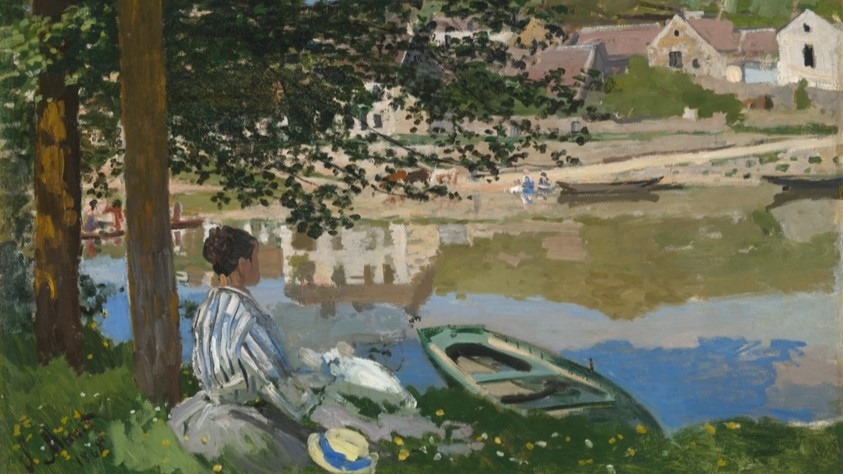

<!DOCTYPE html>
<html>

<head>
    <link href="../style/assets/favicon.ico" rel="shortcut icon" type="image/x-icon" />
    <link href="../style/assets/favicon.ico" rel="apple-touch-icon" />
    <meta charset="utf-8" />
    <meta http-equiv="X-UA-Compatible" content="IE=edge" />
    <meta name="viewport" content="width=device-width, initial-scale=1.0" />

    <title>this is the first day of my life</title>

    <meta content="mcneilly notes" name="description" />
    <meta content="mcneilly" property="og:title" />
    <meta content="mcneilly notes" property="og:description" />

    <meta content="mcneilly" property="twitter:title" />
    <meta content="mcneilly notes" property="twitter:description" />
    <meta property="og:type" content="website" />
    <meta content="" name="twitter:card" />

    <link rel="stylesheet" href="../style/src/style.css" />
</head>

</html>

<div class="container">
    <div id="nav" data-animate style="--stagger: 1;">
        <div id="tab-highlight"></div>
        <a class="nav-item" href="../">about</a>
        <a class="nav-item" href="/notes/">notes</a>
        <a class="nav-item" href="/photos/">photos</a>
    </div>

    <div class="row content">
        <section class="post" data-animate style="--stagger: 2;">
            <div class="post-content">
                
                <span class="imgcaption"><i>On the Bank of the Seine, Bennecourt</i> (1868), Claude Monet</span>
                <h1>this is the first day of my life</h1>
                <h2 style="font-size: 1em; margin-block-start: 0em; color: #a0a0a0;">may 17, 2024</h2>
                <p></p>
                <p>It's dark outside.</p>
                <p>As I walked barefoot along the Charles River late at night, with the cool soon-to-be-summer breeze carrying the weight of my past, I realized that the liminality of the campus around me is not just a fleeting moment, but an inflection point in my life. With each step—each successive second in time—I shed the layers of my adolescence, ready to emerge as a new version of myself on the cusp of my 20th birthday. The journey of the past two years of my life, transitioning from childhood to adulthood, marked by challenges, self-discovery, and the promise of a new beginning, has led me to this pivotal moment. I know that the new day that comes when the sun rises and the birds chirp again will be the first day of my life.</p>
                <p>The past two years have been a great trial, testing my resilience and sense of identity. It started when I turned 18 and had to adjust to a new life in college. Psychologically, I had been scarred from years of bullying and racism growing up in a small homogeneous Chicago suburb. Physically, I was learning to live with hyperacusis, an extreme sensitivity to sound that I had diminished greatly through painful exposure therapy and sheer willpower. I approached college with a blank slate; eager and excited to make new friends and experience the kind of fun I had not experienced in high school. Although my first year came with many highs, it also brought intense lows. The lowest of all was my first heartbreak, a pain that followed me across continents as I ventured to Brazil alone, seeking solace in the unfamiliar.</p>
                <p>In the vibrant streets of Sao Paulo and Rio, I hoped to find myself, but instead, I encountered new challenges. The language barrier (apesar de tentar aprender português) and the isolation of my cold, one-bedroom Sao Paulo apartment weighed heavily on my soul. The loss of a close friend back in Chicago during my time away only deepened my sense of despair. I never got to say goodbye. I never got to attend his funeral. Even as I risked my life exploring the favelas in Rio, climbing through lush mountains, and getting mugged on the street (twice), I realized that the greatest threat to my life was the one happening within me: the slow erosion of my sense of self.</p>
                <p>Returning to MIT for my second year, I found myself entangled in a strange multi-year friendship-turned-situationship that further strained my mental health. Sparing the details, it was an unhealthy, toxic dynamic. The stress of dealing with that, combined with grief and frequent all-nighters, manifested in unhealthy ways, causing me to gain back all the weight I had lost over the summer. It also made me lose sight of who I truly was. On the day the situationship reached its dramatic conclusion, I found myself in the middle of Killian Court, staring at the Boston skyline, feeling utterly lost and broken. The eventual romantic and social fallout of the situationship was grueling. I felt like Kendall Roy at the end of <i>Succession</i>. However, instead of staring out at the New York Harbor, it was Boston, 20 degrees, and snowing. I was frozen (literally).</p>
                <p>When the situationship was at its peak, it always felt like I was waiting for something. I was waiting for us to have a relationship. I was waiting for us to be happy together. I wanted this "ideal" life that I idolized so badly in high school. A life where I was surrounded by friends, in love with my classes, popular, and in a good relationship with a loving partner. After that dramatic fallout, it never came. It never materialized. In the immediate weeks following that, I felt lost. I had waited for something to come. It never came. It was in those feelings of despair that a flicker of clarity ignited within me. I realized that continuing the next year sulking and romanticizing my depression was not a life well-lived, especially in college. Sensationalizing my mental health struggles and heartbreak felt good. I didn't have to do anything. I didn't have to push myself. I didn't have to work on assignments. I didn't have to get out of bed. I didn't have to go to the dining hall to eat. I realized this was wrong. It was wasteful and dishonorable to myself.</p> 
                <p>Slowly but surely over the spring semester, I dug myself out of this hole. It was an arduous process of rebuilding myself. I spent countless nights thinking and pondering. I would wander along the Charles River barefoot late at night to embrace the cold liminality. I felt a lot like Steve Jobs when he was in his hippie era. I even thought about dropping out of MIT, but realized I was aimless. I ultimately decided I still have more to learn here and make new friends. I focused on nurturing my social battery over academics. I shifted away from my toxic friend group (physics majors, amirite?) into a new one. I strengthened my friendship with my closest friend before he moved away to San Francisco. I got more involved in a club that I really enjoyed (MIT Informatics Tournament), and I made a new friendship there that I hope continues for many years. Spring became a season of rebirth.</p>
                <p>As I tried to solve this puzzle of self-acceptance, I also found myself drawn to building. I yearn to build. I LIKE to build. The more I learned HOW to build, the more I learned that you do not need a degree or to take classes to learn how to do it. MIT classes, although educational and very practical, are not that good for builders, in my opinion. I realized that one can learn computer science largely on their own. This was the exigence of me switching my major from solely Computer Science to Math and Computer Science. This shift allowed me to explore my passion for the beauty of mathematics while still maintaining practicality. I realized that the true essence of education lies not solely in the classroom, but in the relentless pursuit of knowledge and the application of it to make something wonderful.</p>
                <p>As my 20th birthday approaches, I also found myself grappling with the weight of comparison. My loss of self-acceptance made me believe that my youth has been wasted on depression, sulking, wasted opportunities, and feeling sorry for myself. I have looked up to young builders like Mark Zuckerberg, Alexandr Wang, Will DePue, Ayaan Haque, and Avi Schiffman. Over the past year, I couldn’t help but compare myself to them. I remember last fall thinking to myself: <i>Alexandr Wang finished YC at the same age I am now</i>; <i>Will DePue was already doing his startup at the same age I am now</i>; <i>Mark Zuckerberg already started Facebook at the same age I am now</i>; <i>What am I doing with my life?</i> I also couldn't help but compare myself to the people around me. I had a neighbor in my dorm lounge who took the spring semester off to work at OpenAI. Although I am very happy for him, and he is one of the smartest people I know, I couldn't help but feel like I couldn't reach his level in my entire life. I had tried, got close, and ultimately failed to get a summer internship at Notion, Bezi, Stripe, and Meta. The loss of my own sense of self made me believe I was a failure instead of realizing I’m on an entirely different path.</p>
                <p>Through the lens of self-reflection, I began to understand that success is not an innate quality. Meeting and knowing lots of amazing people has made me realize it is a product of access and opportunity. My own unique experiences, shaped by my background and the challenges I had faced, were not a hindrance, but a source of strength; a lesson to be experienced and learned from. I have a fundamentally different life than Mark Zuckerberg or Alexandr Wang or my neighbor at OpenAI. I have a different upbringing that is no less valuable. Through this period of rebirth, I made a conscious choice to leave behind the self-doubt and insecurities of my adolescence. Yes, my parents weren’t university professors. Yes, my parents never graduated college. Yes, I didn’t do USACO. Yes, I didn’t know what the Putnam was until last year. Yes, I never went to Exeter or even heard of it. But that’s ok. If you know someone who is your age or younger, don’t compare yourself to them. They are DIFFERENT from you. If you think they are better than you, the best thing you can do is become friends with them and learn from them.</p>
                <p>As I write this, the spring semester is over. It did not go well academically, but that’s ok. It did go well mentally, socially, and emotionally. I am closing the book on my adolescence and opening up the first chapter of my adulthood. Strangely, this feels like more of a transition than going from high school to college. After months of recovery and self-REdiscovery, I am filled with a renewed sense of purpose and determination. My goals are no longer centered around an idealized version of success, but rather on the authentic pursuit of impact, joy, and growth. I am excited to approach my studies with a newfound appreciation for the subjects that truly resonate with me: CS, math, and philosophy. I am also eager to build and collaborate with others to create cool shit. As I stand on the threshold of this new beginning, I feel like there is no more waiting for something. There is no more sulking. To my knowledge, I have only been given one life. I have to maximize its output for impact, fun, and joy. Today is the first day of my new life, and I am ready to embrace all that it has to offer.</p> 
                <p>Bring it on.</p>
                <br>
                <p><b>Thank you to <a href="https://twitter.com/AryoPatel">Aryo Patel</a></b> for proofreading this essay.</p>

            </div>
        </section>
    </div>
</div>